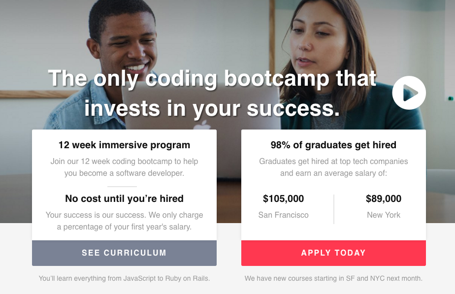
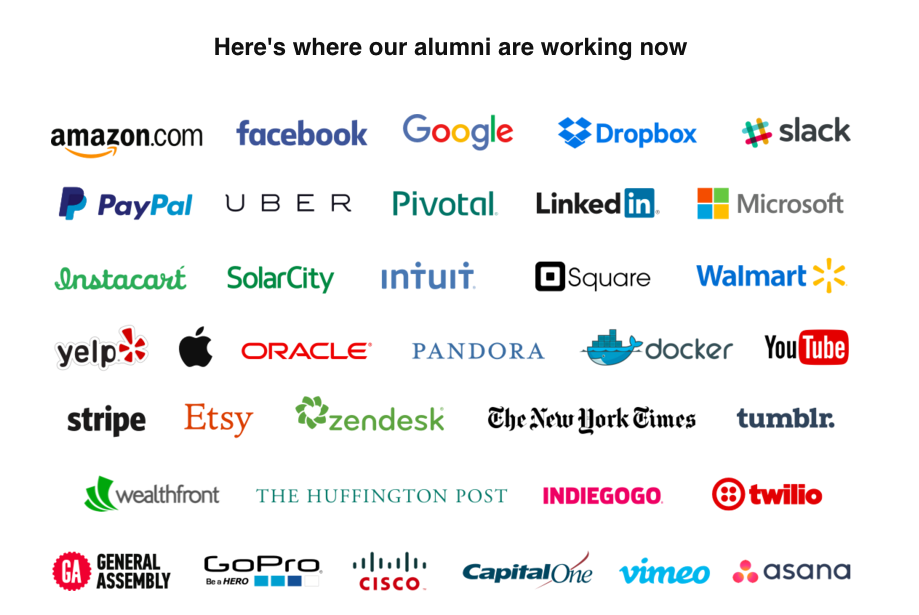

The Bootcamp Stigma
January 22, 2016
Ah, what a rosy picture of coding bootcamps:
I’m sure many of us were seduced by the picture coding bootcamps often paint: leave a job you’re not passionate about, give up a few months of your life, and come out with a much higher-paying, more satisfying job than the one you left. Poof! Good deal, right? Advertisements, newspaper articles, and anecdotes from friends often point to this version of the story.
Woah look at all those companies that are going to be fighting to hire me!
Unfortunately, this makes it sound like a pretty effortless path. Cough up some money for a sweet dev gig. I can imagine I’d be quite offended if I dedicated my entire life to developing a certain skill and then someone came along claiming to teach that particular skill in weeks.
We all know by now that this is a simplified and ignorant view of what bootcamps are actually like. I don’t think any of us expect to be handed a job just because we paid money for this program. However, we’ll all be more successful in the industry if we get ahead of the negative stigma and acknowledge it head on. Let’s start with how coding bootcamps came about.
The History
Software development is a rapidly growing industry, with an estimated 17% growth over the next 10 years. At least 50 coding bootcamps have sprung up across the country in the past 5 years as an answer to this problem of increasing demand. New programming languages are popping up and older languages are evolving - it’s tough to keep up! The type of guided learning environment bootcamps provide often give students the hands-on experience traditional computer science degrees often don’t.
What do people in the industry say?
- The “STEM crisis” isn’t real. There are plenty of skilled workers to fill jobs in technical fields.
- There is a glut of programmers.
- Higher education is elitist and overvalued.
- Coding bootcamps help you get to the core of skills you’ll use every day in your career - there’s no “fluff".
- There’s no way you can squeeze a 4-year degree into 3 months.
- The tech sector is a meritocracy - degrees don’t matter.
- DBC students learn more in 9 weeks than some devs learn in the first few years of their professional careers.
- Bootcamps churn out lower quality workers, while maximizing their own profits.
- Bootcamp grads are often more up-to-date on the latest coding methodologies and tools than experienced developers.
The solution?
Know these conflicting perceptions. In many cases, we'll be competing with computer science grads for jobs they’d traditionally get. This is a tough pill to swallow for those that have taken that route. Stay humble. You will likely have the least technical experience of anyone at your company. Proactively acknowledge and applaud the strengths of your teammates, admit your short-comings, and seek out guidance from those who are more experienced. Find a mentor and emphasize your willingness to keep learning. It is our responsibility to show that bootcamp grads have the skills necessary to keep up - our performance will continue to shape these perceptions! Keep in mind that DevBootcamp is an incredible kickstart to our careers, but the journey has just begun.